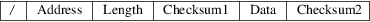
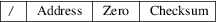

srec_tektronix - Tektronix hexadecimal file format
The Tektronix hexadecimal file format is no longer very common. It serves a similar purpose to the Motorola and Intel formats, usually used to transfer data into EPROM programmers.
The
Lines
Most Tektronix hex files contain only Tektronix hex lines
(see the next section), which always start with a slash
(“/[rq]) character. There are only two types of lines
- data lines and a termination line.
Data
Lines
Data lines have five fields: address, length, checksum 1,
data and checksum 2. The lines always start with a slash
(“/[rq]) character.

|
Address |
This is a 4 character (2 byte) address that specifies where the data in the record is to be loaded into memory. |
Data Length
The data length field is a 2 character (1 byte) field that specifies the number of character pairs (bytes) in the data field. This field never has a value of zero.
Checksum 1
The checksum 1 field is a 2 character (1 byte) field. Its value is the 8-bit sum of the six 4-bit values which make up the address and length fields.
|
Data |
The data field contains character pairs (bytes); the number of character pairs (bytes) is indicated by the length field. |
Checksum 2
The checksum 2 field is a 2 character (1 byte) field. Its value is the least significant byte of the sum of the all the 4-bit values of the data field.
Termination
Line
Termination lines have three fields: address, zero and
checksum. The lines always start with a slash (“/[rq])
character.

|
Address |
This is a 4 character (2 byte) address that specifies where to begin execution. | ||
|
Zero |
The data length field is a 2 character (1 byte) field of value zero. |
Checksum
The checksum 1 field is a 2 character (1 byte) field. Its value is the 8-bit sum of the six 4-bit values which make up the address and zero fields.
Size
Multiplier
In general, binary data will expand in sized by
approximately 2.4 times when represented with this
format.
Here is an example Tektronix hex file. It contains the data “Hello, World[rq] to be loaded at address 0.
/00000D0D48656C6C6F2C20576F726C640A52
/00000000
srec_cat
version 1.65
Copyright (C) 1998, 1999, 2000, 2001, 2002, 2003, 2004,
2005, 2006, 2007, 2008, 2009, 2010, 2011, 2012, 2013, 2014,
2018, 2019, 2022 Peter Miller
The srec_cat program comes with ABSOLUTELY NO WARRANTY; for details use the ’srec_cat -VERSion License’ command. This is free software and you are welcome to redistribute it under certain conditions; for details use the ’srec_cat -VERSion License’ command.